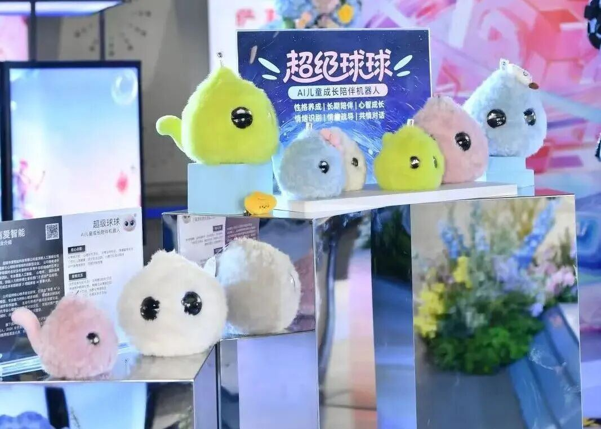
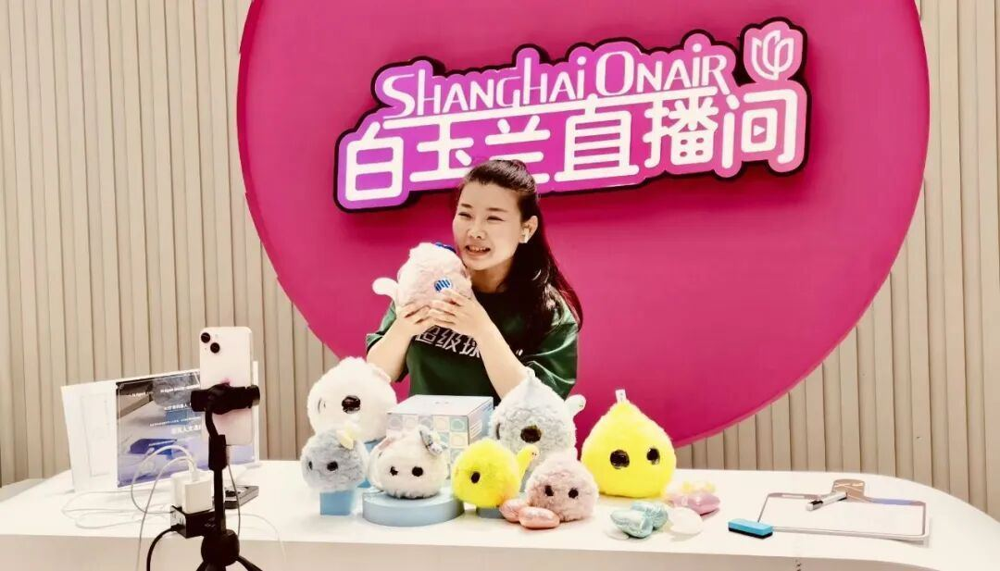
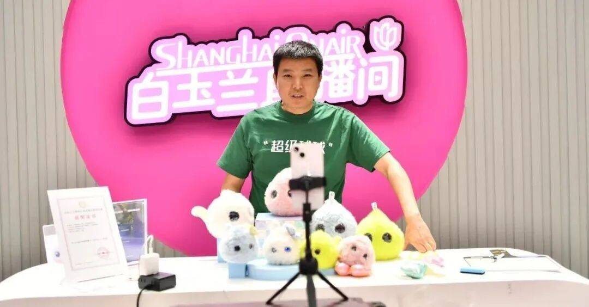
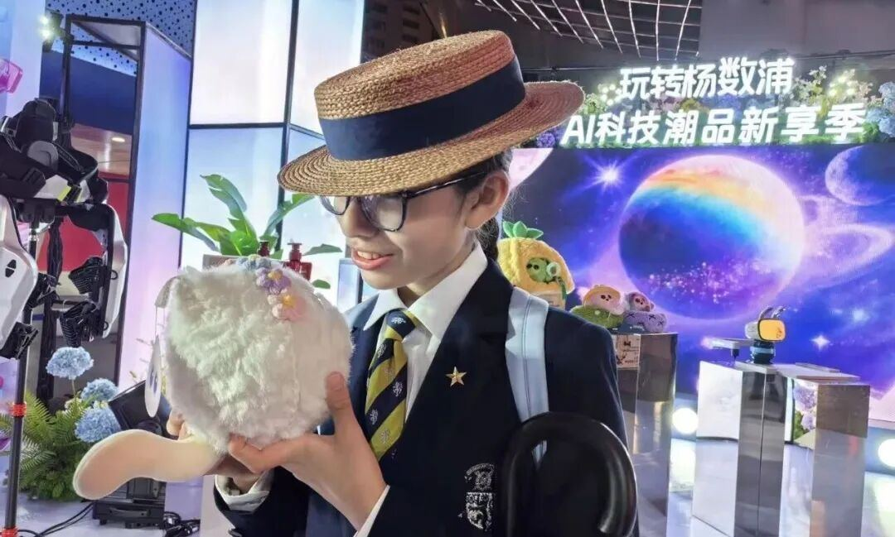
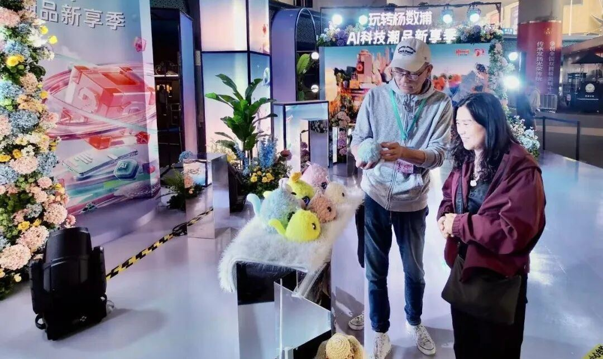
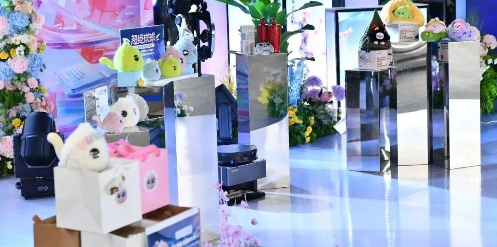

本次活动由杨浦区携⼿抖⾳联合主办，精准聚焦⼈⼯智能、智能穿戴等前沿科技赛道，全⼒推动科创成果落地、打通研发与消费场景的最后⼀公⾥。活动打破传统展会模式，创新打造“前展后播”全新体验，以五⻆场270°全透明玻璃⽩⽟兰直播间为核⼼阵地，融合产品⾸发、沉浸式体验、线下互动打卡、线上即时消费于⼀体，构建起数字化新潮消费场景。


活动现场热度拉满，超级有爱创始⼈元晓帅博⼠、CSO何昌耀亲临⽩⽟兰直播间，与线上线下观众零距离互动，全⽅位拆解展⽰超级球球全系列产品。这只“爱你和懂你情绪”的AI智能⽑绒伙伴，⼀亮相便成为全场焦点，妥妥占据治愈系C位。直播间在线⼈数持续攀升，弹幕刷屏不断，“颜值和实⼒双在线”“太懂孩⼦情绪了”“⽴刻给娃安排”等好评络绎不绝。
线下展台同样⼈⽓爆棚，不少家⻓带着孩⼦驻⾜体验、打卡留念。超级球球两⼤系列产品各有亮点：①抱抱球经典款主打深度⼉童情绪陪伴，情绪疗愈、专注孩⼦⼼理健康成⻓；
②捧捧球精灵款打造四款个性鲜明的萌趣形象不拖拉、不暴躁、⼩坚强、⼩话痨，精准匹配不同孩⼦的性格与陪伴需求。软乎乎的亲肤⽑绒外观、温暖治愈的童真语⾳，让⼤⼩朋友都爱不释⼿，沉浸式感受AI陪伴的魅⼒。


区别于市⾯上搭载通⽤⼤模型的传统玩具、单纯娱乐化的AI玩具，超级球球核⼼竞争⼒拉满。产品搭载由⼼理学专家郭凯燕博⼠和清华⼤学等5博⼠团队联合研发的“有爱AI⼼理专属模型”，拥有精准情绪识别、深度共情对话、⻓期个性化记忆等专业能⼒，构建起“情绪感知→科学评估→正向⼲预→⻛险预警”的完整⼉童⼼理服务闭环。它不仅是⼀款⾼颜值的消费级智能硬件，更是经过专业学术与实践双重验证的⼉童⼼理成⻓陪伴⼯具，填补了⼉童专业情绪陪伴市场的空⽩。
在杨浦“前展后播”的新型直播经济场景下，超级球球完美诠释了“有温度的硬科技”。产品理念既契合杨浦区打造沉浸式、数字化、年轻态消费新场景的发展⽅向，也深度呼应五五购物节“以源头科技创新，激活消费新动能”的核⼼主旨。让懂情绪、有温度的AI陪伴机器⼈⾛进万千家庭，正是本次AI科技潮品新享季传递的核⼼价值。
有爱智能，让专业的⼉童情绪陪伴触⼿可及。


这个春夏，超级球球将带着温暖与科技感，陪伴每⼀个孩⼦健康成⻓，守护每⼀份纯真童⼼。
六⼀⼉童节即将到来，送孩⼦超级球球，就是送孩⼦⼀⽣好性格！